Constraints
Architectural design is governed by rules — minimum areas for habitable rooms, mandatory adjacencies between kitchens and dining spaces, fire-code egress paths, aspect-ratio limits that keep rooms from becoming pathological corridors. KhepriBase's constraint system captures these rules as first-class, composable values that can be validated against either a declarative Layout or an imperative BuildResult.
This page is the narrative treatment. For the full function and type reference, see Constraints (reference).
What a constraint is
A Constraint bundles four things:
- A name (for reporting).
- A severity —
HARD,SOFT, orPREFERENCE. - A category —
DIMENSIONAL,ADJACENCY,AREA_PROPORTION,CIRCULATION, orENVIRONMENTAL. - A check function that receives a design context and returns a vector of
Violations.
The check function is closed over whatever parameters the constructor took (minimum area, target kind, adjacency pair, etc.). Validating a vector of constraints is simply "run every check, group the results by severity":
A minimum-area violation looks like this — the too-small bedroom is marked with the diagonal hatch:

An unmet must_adjoin between rooms that share no boundary:

using KhepriBase
desc = (room(:living, :living_room, 5.0, 4.0) |
room(:kitchen, :kitchen, 3.0, 4.0)) /
room(:bath, :bathroom, 2.0, 2.0)
rules = [
min_area(:living_room, 15.0),
min_area(:bedroom, 9.0),
min_dimension(:bathroom, 1.8),
must_adjoin(:bathroom, :bedroom; severity = SOFT),
]
result = validate(layout(desc), rules)
result.passed # false — the bathroom has no neighbour bedroom
result.hard_violations
result.score # weighted penalty; lower is better
report(result) # pretty-print to stdoutSeverity: what happens on a violation
Severity controls how the result is interpreted:
| Severity | Weight in score | Blocks approval? | Typical use |
|---|---|---|---|
HARD | 1000 | yes | Building-code minima, mandatory egress. |
SOFT | 10 | no (still reported) | Good-practice rules that can be negotiated. |
PREFERENCE | 1 | no | Nice-to-have aesthetic / orientation hints. |
validate returns a ValidationResult whose passed field is true iff hard_violations is empty. The score is a single weighted number useful for ranking candidate designs in a generative search.
Context polymorphism
KhepriBase exposes two compilation paths that both end in a space-boundary view:
layout(desc::SpaceDesc)— the declarative engine, producing a multi-storeyLayout.build(storey)— the imperative pipeline, producing a singleBuildResult.
The library constructors (min_area, must_adjoin, all_reachable, etc.) are written once and dispatch on whichever context they're handed. A single rule set works for both paths:
rules = [min_area(:bedroom, 9.0), must_adjoin(:bathroom, :bedroom)]
# Declarative path
validate(layout(desc), rules)
# Imperative path
r = build(floor_plan(...))
validate(r, rules)Behind the scenes, the context accessors in ConstraintLibrary.jl normalise Layout and BuildResult to a shared "iterable of spaces" / "iterable of storeys" / "iterable of adjacencies" view (_ctx_spaces, _ctx_storeys, _ctx_adjacencies), so each constraint constructor sees the same shape either way. Constraints that inspect physical doors (has_door, has_connection) stay BuildResult-only — Layout doesn't know about doors until build runs.
Composing constraints
Constraints compose like logical formulas. Every combinator returns a new Constraint:
combine(c1, c2, …)— conjunction; violations are concatenated, severity is the max of the inputs.either(a, b)— disjunction; passes when at least one side has no violations. If both fail, the fewer-violation side is reported.when(predicate, c)— gatecso its check runs only whenpredicate(ctx)is true. Useful for rules that apply only to multi-storey buildings, only to residential programmes, etc.with_severity(c, sev)— override the severity of an existing constraint (e.g., promote aSOFTlibrary rule toHARDfor a specific project).merge_constraints(sets...)— concatenate severalConstraintSets into one.
# "every bedroom must be ≥ 9 m² AND have min dim ≥ 2.4 m"
bedroom_rule = combine(
min_area(:bedroom, 9.0),
min_dimension(:bedroom, 2.4),
)
# "either there is a dining room, or the kitchen is ≥ 12 m²"
dining_or_big_kitchen = either(
has_kind_present(:dining), # user-written
min_area(:kitchen, 12.0),
)
# Only enforce vertical alignment if there are ≥ 2 storeys
stack_rule = when(ctx -> length(ctx.storeys) ≥ 2,
vertical_alignment(:bathroom))The category taxonomy
Categories are informational — they don't change validation behaviour but they let you slice a ValidationResult by concern:
- DIMENSIONAL — areas, widths, depths, heights, aspect ratios.
- ADJACENCY — which kinds of spaces must or must not share boundaries.
- AREA_PROPORTION — relative areas across kinds (e.g., circulation-to-usable ratio).
- CIRCULATION — reachability, dead-end corridors, egress routes.
- ENVIRONMENTAL — exposure to exterior, orientation, facade coverage.
A reporting dashboard can group violations by category to help a designer triage "which kind of rule am I breaking the most?".
The fixer loop
Validating a failing design is only half the story; the other half is fixing it. ConstraintFixer pairs a constraint-name substring with a transform (desc, violation) -> desc' that rewrites the description in response.
fixer = ConstraintFixer(
"enlarge_bedroom", # name, for logs
"min_area_bedroom", # matches Violation.constraint_name
(desc, v) -> update_room_by_id(desc, Symbol(v.target)) do r
room(r.id, r.use, r.width * 1.1, r.depth * 1.1; height=r.height, props=r.props)
end,
)
final_desc, final_result = apply_fixers(desc, layout, rules, [fixer])apply_fixers iterates:
- Build a context via
build(desc)(any function with that shape). - Validate against the constraint vector.
- For each hard violation, apply the first fixer whose
patternoccurs in the violation'sconstraint_name. - Stop when the result is hard-clean, when no fixer matches, or when
max_itersis reached.
The transform is free to return a completely different tree; the fixer is just a pattern-matching rewrite rule over designs.
When to use what
- Write a library constraint when the rule is reusable across projects — minimum areas, code-driven egress, orientation preferences.
- Write a one-off check function and wrap it in
Constraintwhen the rule is specific to a single project or typology. - Use
with_severityto adjust the strictness of a library rule for a particular client or regulatory context, without rewriting the check. - Use the fixer loop during generative design, where you want the search to self-repair small violations rather than discard the whole candidate.
- Skip constraints entirely for early sketches — the system is designed so that
layout(desc)alone produces a valid geometric result; validation is a separate, opt-in pass.
See also
- Constraints (reference) — every type, combinator, and library constructor with signatures.
- Designs (Level 2) — the declarative tree the constraint library validates.
- Layout Engine — how
layout(desc)produces theLayoutthat constraints see. - Adjacencies — the shared-edge records adjacency-category constraints inspect.